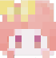

欢迎来到我的项目主页 — 记录学习、探索与创造
一个基于Flask的Minecraft服务器管理面板，旨在简化Minecraft服务器管理任务，特别是处理白名单申请。
一个专为Minecraft服务器打造的客户端-服务端管理应用。
围绕"情"的主题，设计三维环境下的应用。
计算机图形学课程实验。
图像处理课程实验。
在浏览器中对DICOM影像进行基础操作。
经典的贪吃蛇游戏实现，具有加速功能和特殊道具。
在网页上浏览Markdown文件。
还在学习中，做点自己喜欢的事情，还会继续努力。
如果您对我的项目感兴趣或有任何问题，请随时通过以下方式联系我：